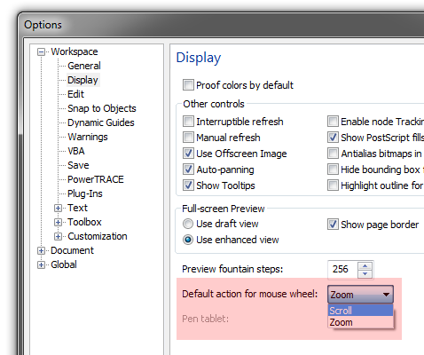

Отключить zoom при прорутке (C-Draw-12)
yuk / 10.02.2011, 23:08/00:41
Форум:
Возможно ли в CorelDraw 12 отключить изменение масштаба при прокрутке колесом мыши? Чтобы при прокрутке прокручивался документ?
Возможно ли в CorelDraw 12 отключить изменение масштаба при прокрутке колесом мыши? Чтобы при прокрутке прокручивался документ?
Нажать однократно колесо как кнопку - появится крест - ведите прокручивайте куда надо - доехали - нажали ещё раз. Такое не устраивает? А зум пускай остается.
Неудобно как-то.
Пользуюсь пока HandTool.
Но спасибо. Об этом способе не знал.
через драйвер мыши ... поцитирую COREL FAQ и себя в том числе =)
следует заметить, что это относилось к концу 90-х и преследовало обратную задачу - включить ZOOM. Тем не менее попытайтесь попробовать - вдруг выйдет настроить
2.2.1. В связи с появлением мыши с роликом и дополнительными
кнопками интересно узнать: будет корел9 их поддерживать? Конечно
скролинг работает, но функция Zoom (стандартно работающая, и в
photopaint9, и в word, и в msie) не работает!
[A] Serge Fateeff <sergef@aaanet.ru>
Колесо поддерживается начиная с 8 версии. Если работает
неадекватно (например вместо зума в Draw происходит скроллинг), то
необходимо смотреть настройки драйвера мыши и всех дополнительных
мышиных приблуд. Некоторые драйвера перехватывают сигналы колеса и
транслируют их в команды скроллинга. Draw это не нужно, ему нужны
стандартные сигналы. На моей системе Logitech Wheel Mouse работает со
стандартным драйвером, входящем в поставку Windows - колесо прекрасно
везде работает.
[A] Alexandr Voronin <2:5000/104.37>
Конкретно, на примере драйверов от MS Intellimouse - идем в
настройки мыши - Start - Setting - Control Panel - Mouse -
вкладка Wheel - кнопка Advansed - в этом окне перечислены программы. в
которых прокрутка выключается - если там нет нужной, то необходимо
добавить ее клавишей Add. Драйвера от MS Intellimouse работают также и
на мышах Logitech и по моему мнению лучше родных.
Да, это я уже где-то встречал.
Увы, в настройках колеса моей мыши (Logitech) можно только указать, на сколько строк будет работать прокрутка.
Думал, в кореле есть опция какая-нибудь, которая включает/выключает прокрутку/зум.
Ну что ж, нет так нет.
yuk, вообще есть такая настройка ;) вот она:

Одного только не помню — в какой версии появилась эта настройка.
Да, это как раз то, что я хотел!!!
Увы, отсутствует в 12-й версии. Что ж, будем обновляться.
Спасибо!
yuk, попробуй ещё зажать alt и покрутить колесо. Прокрутка будет по вертикали. С ctrl — по горизонтали.
П.С. Хотя, судя по всему, в 12 это не будет работать
да, не работает
Купил новую мышь (A4Tech x6-90d), поставил её драйвер. При Зуме колесом мыши - зуммируется инвертно: т.е. наоборот (колесо от себя - удаление, к себе - приближение). Понимаю, что дело в драйверах мыши, но можно-ли как-то Корел заставить скроллить как раньше? мож в реестре чего надо подправить - или ещё где?..
Удалить драйвер, оставить виндовый.
Страницы